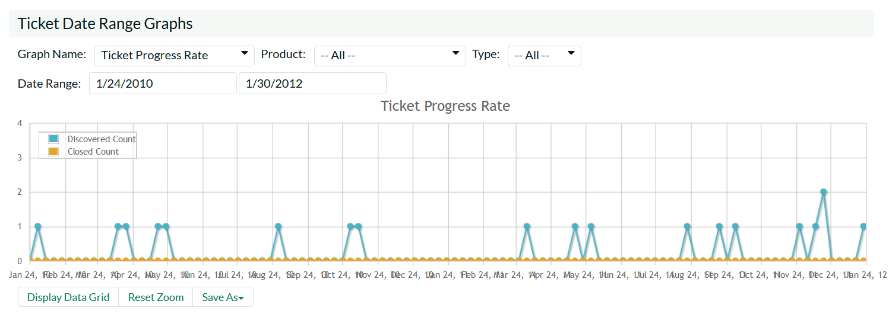
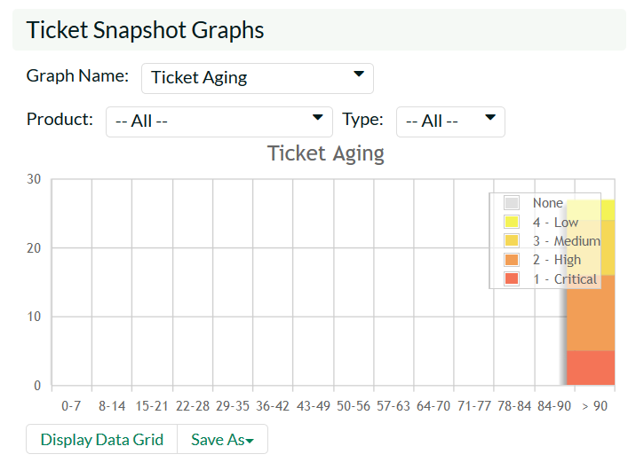

Reports
This section describes the reporting features of KronoDesk®, including an overview of each of the report types that are available. When you click on the "Reports" tab on the global navigation bar, you will initially be taken to the reports home page illustrated below:

The Reports page is a dashboard that contains links to a number of reports, as well as a set of graphs. By default the dashboard will display: the Ticket Progress Rate, Ticket Aging and Ticket Custom Graphs.
Each of the graphs is described in more detail in the sub-sections below:
Ticket Progress Rate
The ticket progress rate chart displays the total number of tickets created and closed over a particular date-range, either for all ticket types and/or products or for a specific ticket type and/or product:

In this version of the report, the y-axis represents the number of tickets (either created or closed in a 24 hour period), and the x-axis represents a specific day in the time-span. Each data-point can be viewed by positioning the mouse pointer over the point, and a "tooltip" will pop-up listing the actual data value. You can filter the report by the type of ticket and/or product, and also change the date range (e.g. displaying only the infrastructure tickets for the date range). If you choose a smaller date-range, the x-axis will switch from weekly to daily and if you choose a larger date-range, the x-axis will switch to monthly.
Clicking on the "Display Data Grid" link will display the underlying data that is being used to generate the graph. In addition, clicking on the Download Data as CSV link will export the datagrid into Comma Separated Values (CSV) format that can be opened in MS-Excel. Some browsers also support the ability to save the graph as an image file (JPEG, PNG and GIF formats).
Ticket Cumulative Count
The cumulative ticket count chart displays the cumulative total number of tickets logged in the system over a particular date-range, either for all ticket types and/or products or for a specific ticket type and/or product. The report displays two data series, one illustrating the total count of all ticjets, the other the total count of all open tickets (i.e. with status not set to a closed status):
In this version of the report, the y-axis represents the number of tickets, and the x-axis represents a specific week in the time-span. Each data-point can be viewed by positioning the mouse pointer over the point, and a "tooltip" will pop-up listing the actual data value. You can also filter the type of ticket being reported, the product as well as change the date interval. If you choose a smaller date-range, the x-axis will switch from weekly to daily and if you choose a larger date-range, the x-axis will switch to monthly.
Clicking on the "Display Data Grid" link will display the underlying data that is being used to generate the graph. In addition, clicking on the Download Data as CSV link will export the datagrid into Comma Separated Values (CSV) format that can be opened in MS-Excel. Some browsers also support the ability to save the graph as an image file (JPEG, PNG and GIF formats).
Ticket Open Count
The open ticket count chart displays the net number of open tickets in the system over a particular date-range categorized by ticket priority, either for all ticket types and/or products or for a specific ticket type and/or product:

In this version of the report, the y-axis represents the number of tickets, and the x-axis represents a specific week in the time-span. The exact count of each bar in the stacked histogram can be viewed by positioning the mouse pointer over the bar, and a "tooltip" will pop-up listing the actual data value. You can also filter the type of ticket being reported, the product the ticket was reported against, as well as change the date interval. If you choose a smaller date-range, the x-axis will switch from weekly to daily and if you choose a larger date-range, the x-axis will switch to monthly.
Clicking on the "Display Data Grid" link will display the underlying data that is being used to generate the graph. In addition, clicking on the Download Data as CSV link will export the datagrid into Comma Separated Values (CSV) format that can be opened in MS-Excel. Some browsers also support the ability to save the graph as an image file (JPEG, PNG and GIF formats).
Ticket Aging
The ticket aging chart displays the number of days tickets have been left open in the system. The chart is organized as a stacked histogram, with the count of tickets on the y-axis and different age intervals on the x-axis. Each bar-chart color represents a different ticket priority, giving an IT service manager a snapshot view of the age of open tickets by priority.

This report can be filtered by the type of ticket and/or product, so for example you can see the aging of just support tickets, or just tickets for a specific product.
Clicking on the "Display Data Grid" link will display the underlying data that is being used to generate the graph. In addition, clicking on the Download Data as CSV link will export the datagrid into Comma Separated Values (CSV) format that can be opened in MS-Excel. Some browsers also support the ability to save the graph as an image file (JPEG, PNG and GIF formats).
Ticket Turnaround Time
The incident turnaround time chart displays the number of days incidents have taken to be closed (from the time they were first raised) in the system. The chart is organized as a stacked histogram, with the count of incidents on the y-axis and different turnaround time intervals on the x-axis. Each bar-chart color represents a different incident priority, giving a project manager a snapshot view of the turnaround time of project incidents by priority.
This report can be filtered by the type of ticket and the product, so for example you can see the turnaround time of just infrastructure tickets, or just tickets for a specific product.
Clicking on the "Display Data Grid" link will display the underlying data that is being used to generate the graph. In addition, clicking on the Download Data as CSV link will export the datagrid into Comma Separated Values (CSV) format that can be opened in MS-Excel. Some browsers also support the ability to save the graph as an image file (JPEG, PNG and GIF formats).
Ticket Custom Graphs
The ticket custom graph widget shows how many tickets are currently in the system. The number of tickets is displayed according to the criteria that you specify. You can specify the type of data displayed along the x-axis, and the ticket information that is used to group the data. When you first open the graph you will be asked to pick the field that you would like to display on the x-axis and the field that you would like to group the data by. Once you have chosen the appropriate fields the graph will be displayed:

In the illustration above, the x-axis represents the ticket status, and the individual bars are grouped by the priority of the ticket. Each data-value can be viewed by positioning the mouse pointer over the bar, and a "tooltip" will pop-up listing the actual data value. Clicking on the "Display Data Grid" link will display the underlying data that is being used to generate the graph. In addition, clicking on the Download Data as CSV link will export the datagrid into Comma Separated Values (CSV) format that can be opened in MS-Excel. Some browsers also support the ability to save the graph as an image file (JPEG, PNG and GIF formats).
Reports
Kronodesk has nine different reports covering the help desk, knowledge base, organizations, and users. Each report can be exported in a number of different formats, including PDF, Word, and Excel. Each report can also be filtered by a number of different fields and sorted by a particular field as well. These features make it easy to quickly generate a report to explore a subset of all the data in the system.
For example, you can create a report showing all tickets in the last six months for one product that have been resolved. Below is a report configuration page to illustrate the exporting, filtering, and sorting options available. Here we are looking at the Ticket Details report.
To create the report, configure the options as required, then click "Create Report". The report will then be dynamically created live. To view the report follow the onscreen instructions.

The first part of the report generated may look something like that below in HTML format: